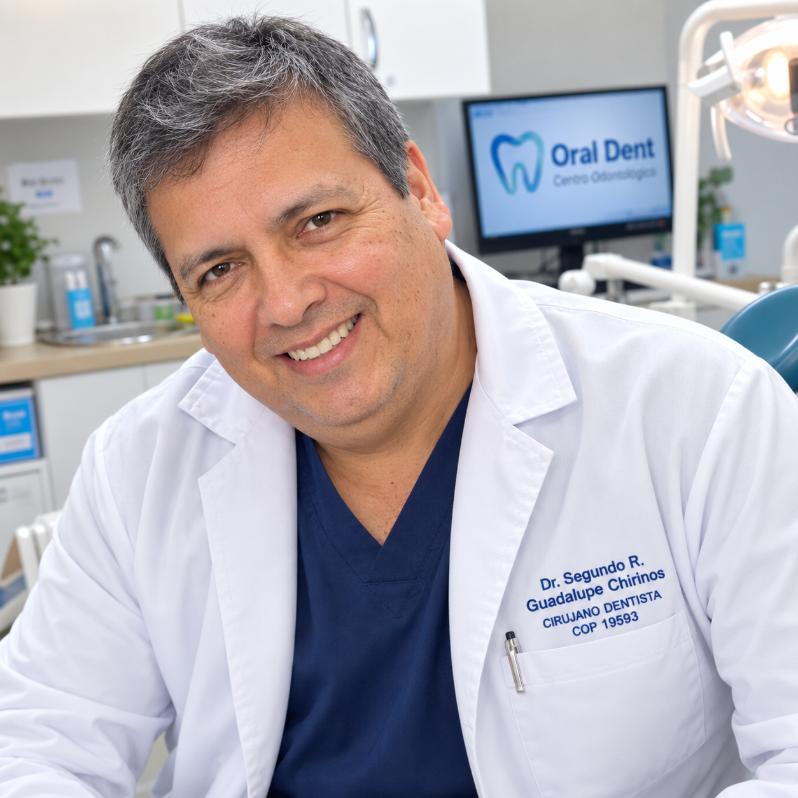
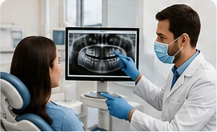
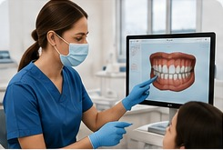
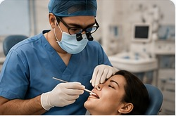
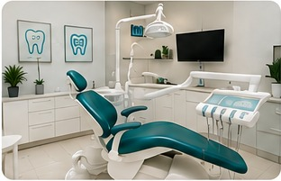
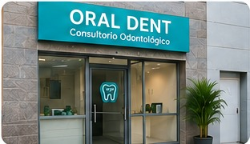
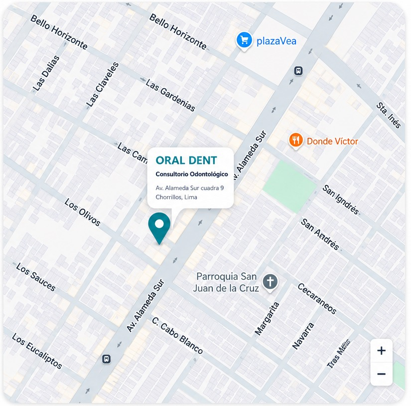

Atención profesional
Orientación odontológica personalizada para cada paciente.
Queremos que cada visita sea clara, cercana y orientada a tu bienestar.
Orientación odontológica personalizada para cada paciente.
Una propuesta de cuidado para diferentes necesidades de salud oral.
Te explicamos las alternativas de tratamiento de forma sencilla.
Estamos en Chorrillos, en la zona de Alameda Sur.

Profesional comprometido con brindar una atención odontológica cercana, personalizada y orientada al cuidado de la salud y estética de la sonrisa, con más de 25 años de trayectoria al servicio de la comunidad.
La información académica y profesional presentada aquí corresponde a los datos que hemos podido validar hasta ahora. Los detalles adicionales serán confirmados directamente con el doctor.
Quiero conocer más →Una presentación profesional preparada para la versión de demostración de Oral Dent.
El Dr. Segundo Roberto Guadalupe Chirinos es Cirujano Dentista y desarrolla su actividad profesional en el Centro Dental Especializa Oral Dent, brindando atención a sus pacientes con un enfoque cercano y personalizado.
Cirujano Dentista — Universidad de San Martín de Porres (USMP), promoción 1999.
Profesional identificado con el COP 19593.
Más de 25 años de trayectoria dedicados a la atención odontológica y al acompañamiento de sus pacientes y familias, construyendo experiencia y confianza a lo largo de los años.
En esta versión de demostración destacamos su trato profesional, cercanía y dedicación. Los reconocimientos y testimonios reales serán incorporados cuando sean validados por el consultorio.
Selección inicial para la demostración. Los tratamientos definitivos serán confirmados por Oral Dent.
Prevención, evaluación y tratamiento integral.
Opciones para mejorar la apariencia de tu sonrisa.
Alternativas para mejorar alineación y función dental.
Recuperación de función, comodidad y estética.
Atención orientada a las necesidades de los más pequeños.
Orientación para conservar una buena salud bucal.
Un proceso clínico claro y personalizado para cuidar tu salud bucal en cada etapa del tratamiento.

Realizamos una entrevista clínica para conocer tus necesidades, antecedentes médicos y hábitos. Evaluamos tu salud bucal mediante un examen completo y, cuando sea necesario, estudios complementarios para orientar un diagnóstico preciso.

Analizamos los hallazgos clínicos y los resultados disponibles para explicarte tu situación bucal y las alternativas de tratamiento. Conversamos contigo sobre beneficios, tiempos, cuidados y prioridades para que puedas decidir con información clara.

Diseñamos un plan de atención a tu medida, detallando los procedimientos indicados, número estimado de sesiones y cuidados necesarios. Coordinamos contigo las citas y resolvemos tus dudas antes de comenzar.
Monitoreamos tu evolución y realizamos controles periódicos para comprobar el avance del tratamiento. También te brindamos recomendaciones de higiene, prevención y mantenimiento para conservar una buena salud oral.
Espacio reservado para testimonios reales que nos entregue el consultorio.
“Excelente atención y trato muy amable.”
Testimonio pendiente de validación“Me explicaron claramente mi tratamiento.”
Testimonio pendiente de validación“Una experiencia muy buena desde la primera consulta.”
Testimonio pendiente de validaciónAgenda una evaluación odontológica con Oral Dent.
Selecciona una fecha y horario. La solicitud quedará pendiente hasta que el doctor la revise y confirme.
Propuestas promocionales para validar con el doctor antes de publicarlas.
Evaluación inicial y recomendaciones para tu salud bucal.
Una opción para coordinar controles periódicos de varios integrantes de la familia.
Campaña promocional sujeta a evaluación y condiciones definidas por Oral Dent.
Queremos ayudarte a cuidar tu sonrisa. Escríbenos por WhatsApp y conversemos sobre tu necesidad odontológica.

Av. Alameda Sur cuadra 9
Chorrillos, Lima

Lunes a Viernes: 9:00 a.m. – 7:00 p.m.
Sábados: 9:00 a.m. – 2:00 p.m.
Con gusto te orientaremos sobre tratamientos, promociones y el cuidado de tu salud dental.
